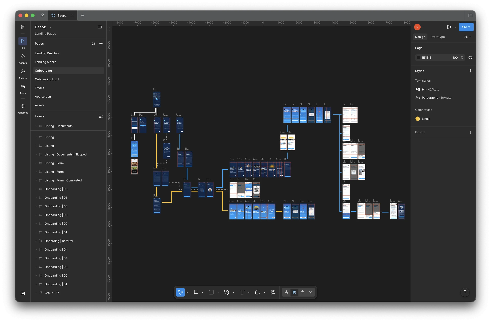
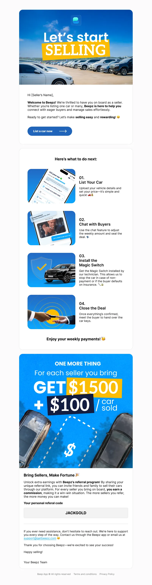
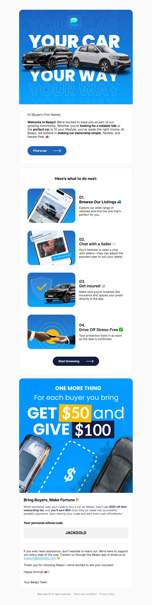
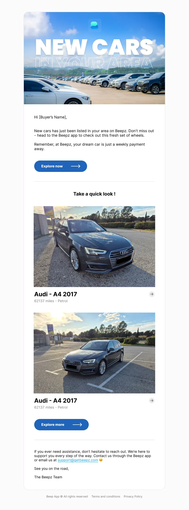
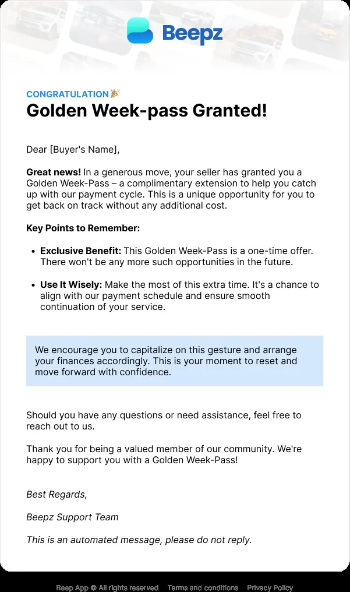

WaldmannVincent
Portfolio
2026
Enchanté, moi c’estVincent
Webdesigner

Basé en France
Disponible


Portfolio
2026
Enchanté, moi c’estVincent

01. Sur les sentiers
Treize ans d’expérience, et un web qui s’est réinventé plusieurs fois entre-temps. Depuis 2013, les sites ont changé de forme, de rythme et de support — j’ai grandi et je me suis adapté avec eux.
L’essentiel de ces années s’est joué sur des sites à très forte audience, là où un écran validé le matin est vu par des centaines de milliers de personnes le soir. Chaque décision compte, et c’est une excellente raison de faire les choses bien.
Mes collègues m’ont souvent comparé à un couteau suisse, pour ma polyvalence et mon envie de comprendre ce qui m’entoure. UX, product design, création print ou intégration de site : je passe d’un bout à l’autre de la chaîne sans changer de casquette. J’aime comprendre les gens avec qui je travaille, pour échanger facilement avec eux et éviter ainsi de livrer un concept infaisable.
L’IA divise le métier ; pour moi, elle travaille en appui. Détourage, relecture ou écriture de code : elle accélère, mais c’est moi qui tiens le crayon — je comprends ce qu’elle produit et je le corrige.
02. Suivez le guide
2012
Nouveau Monde DDB·Lyon
Chargé de la création de visuels et de supports web (newsletter, articles, vidéo) pour les clients de l’agence : Wedze, Pilot, SPAR…
2013
Jacquie & Michel·Paris
Prise de poste chez J&M : création de visuels pour les réseaux sociaux, design d’interaction web, refonte des sites historiques de la marque.
2016
Jacquie & Michel·Pau
Conception et intégration des projets web de la marque, création des visuels de communication pour les réseaux sociaux, réalisation de concepts marketing.
2023
ZXY Corp·Budapest
Développement d’une équipe web pour le groupe Ares SAS en Hongrie. Création de designs d’interface, campagnes marketing.
2025
Freelance·France
Création d’identités visuelles, design et développement de pages de vente et de sites internet.
03. Extraits de carte
Jacquie & Michel
On dit merci qui ?
Je suis arrivé au tout début de l’équipe, et j’ai grandi avec la marque.
Beepz
Marketplace de voiture
Beepz permet d’acheter et de vendre une voiture sans vérification de crédit.
Jimizz
Jacquie et Michel Crypto
Le jeton de Jacquie & Michel, et les quatre surfaces qu’il a fallu dessiner autour pour en faire un produit.

On dit merci qui ?
J&M est une marque française de contenu pour adultes fondée en 1999, devenue l’un des sites X les plus populaires du pays grâce à son positionnement « amateur » et une stratégie marketing très visible, au point de s’imposer bien au-delà de son public initial dans la culture populaire française.
Je suis arrivé au tout début de l’équipe, et j’ai grandi avec la marque — assez tôt pour l’aider à prendre sa place dans le paysage français, assez longtemps pour reprendre une à une toutes les surfaces sur lesquelles elle se montre.
L’état des lieux était sans ambiguïté : un design vieilli et aucune
optimisation.
Il n’y avait pas d’ajustement à faire, il fallait tout reprendre depuis le
début, pour que les guidelines et les bonnes pratiques s’appliquent enfin
partout.


Douze marques du groupe


Jacquie & Michel
Jacquie & Michel a toujours été connu pour ses campagnes marketing innovantes et impactantes. Le meilleur exemple : le fameux « On dit merci qui ? » est devenu une expression courante dans la culture populaire française.
La campagne JacquIA
« Devenez la voix-off de Jacquie & Michel » : une page de campagne et son test en ligne, du lancement jusqu’au score sur 100. Le site est toujours en ligne.
jacquia.com


Jacquie & Michel


Fiche de course
Beepz permet d’acheter et de vendre une voiture sans vérification de crédit. Trois mois pour unifier son identité sur l’ensemble de ses supports : design système, landing page, emails.


L’approche
Beepz est une place de marché automobile née en Californie. Sa promesse : acheter une voiture sans vérification de crédit, via des frais d’activation uniques puis des paiements hebdomadaires. Un modèle qui s’adresse à ceux qu’un score écarte du financement classique.
La société revendique plus de 100 000 téléchargements, 19 000 utilisateurs actifs et 4 000 voitures vendues, et prépare son expansion hors de Californie. Une croissance rapide, qui exige des fondations réutilisables.
À mon arrivée, aucune ligne directrice n’existait. Chaque intervenant designait selon ses propres repères, et l’ADN de la marque se diluait à chaque nouvel écran : le site ne correspondait pas à l’application, les emails à aucun des deux.

Trois livrables, un seul système. La landing page et les emails ne sont pas deux chantiers parallèles : ce sont les deux terrains sur lesquels le socle a été appliqué, éprouvé, puis corrigé.
Beepz · 01 · Le socle
L’enjeuFormaliser l’ADN de la marque, pour qu’aucun intervenant n’ait plus à le deviner.
J’ai repris la palette existante plutôt que de la remplacer : intentions conservées, rapports assainis. Surtout, chaque couleur porte désormais le nom de son usage — Buyer Yellow, Seller Blue. Les deux faces de la place de marché ont chacune la leur, et le choix cesse d’être une question de goût.
Albert Sans porte l’ensemble : une famille unique, lisible par les deux publics de la plateforme — les professionnels d’un côté, vendeurs et gestionnaires de flottes ; les particuliers de l’autre. Sérieuse sans être distante, elle tient du titre d’accroche à la mention légale.

Une couleur porte le nom de son destinataire, pas celui de sa teinte.
Albert Sans, famille unique. Une seule voix pour deux publics.
Un Figma pour l’équipe, un PDF pour les partenaires.
Beepz · 02 · La vitrine
L’enjeuRassurer les deux versants de la place de marché en même temps : convaincre l’acheteur que le catalogue est fourni, et le vendeur qu’il y a des acheteurs qui l’attendent.
La page en place n’avait jamais été pensée comme une page : un template générique, monté pour que le nom de domaine ne reste pas vide. Rien n’y mettait en avant ce qui distingue Beepz. Il n’y avait donc pas de refonte à faire au sens strict — il fallait écrire la page.
Une place de marché se vend deux fois. Un vendeur ne dépose sa voiture que s’il croit à la demande ; un acheteur ne s’inscrit que s’il croit au stock. Déséquilibrer la page d’un côté, c’est perdre l’autre — et une marketplace qui paraît vide ne se remplit jamais.


Beepz · 03 · La montée
L’enjeuConstruire un parcours d’entrée là où il n’y en avait aucun — et le faire mener chacun, acheteur ou vendeur, jusqu’à un profil complet.
Il n’y avait pas d’onboarding. Rien entre le téléchargement de l’application et son écran d’accueil : ni guidage, ni explication de ce que la plateforme permet de faire.
J’ai construit le parcours entier, du splash au profil renseigné. Il ne se contente pas d’inscrire : il mène chacun jusqu’à un profil complet et utile pour ce qu’il vient faire — un acheteur prêt à chercher, un vendeur prêt à publier son annonce. Une quarantaine d’écrans traversés, soixante-sept frames une fois les états comptés.
La décision qui tient tout le reste : la question « How will you use Beepz? » est posée avant l’inscription, avant la moindre saisie. Trois réponses — acheter, vendre, parrainer — et tout ce qui suit en découle : un vendeur ne voit jamais les arguments de l’acheteur, et la vérification d’entreprise ne s’adresse qu’aux professionnels.



Beepz · 04 · La relance
L’enjeuAligner les emails sur le système, pour que la marque soit la même dans la boîte de réception et sur le site.
Les gabarits ont été repris un par un : bandeaux, hiérarchie, boutons et pieds de page redessinés sur la palette et sur la typographie du socle.
Chaque envoi emprunte désormais ses composants au reste du système — le même appel à l’action, la même fiche véhicule que dans l’application. Le système ne s’arrête pas au site.





To the moon
Le jeton de Jacquie & Michel, et les quatre surfaces qu’il a fallu dessiner autour pour en faire un produit : un site vitrine, un dashboard d’investissement, une marketplace de NFT et un site de quiz. Une identité neuve à tenir d’un écran à l’autre, sur un sujet où presque tout restait à inventer.
Jimizz est la crypto-monnaie pensée par Jacquie et Michel, le leader du X en France, pour révolutionner le secteur du X grâce à des fonctionnalités inédites qui profiteront aux consommateurs, aux créateurs et aux investisseurs.
Jimizz


Jimizz
En plus de proposer une monnaie, le projet Jimizz a développé plusieurs plateformes pour construire un écosystème complet. Un dashboard pour la gestion de son investissement, une marketplace pour acheter des NFT exclusifs et même un site de quizz pour animer sa communauté !


04. Contact
Je suis disponible pour de nouvelles collaborations.
Un projet, une idée ?
Écrivez-moi, on en parle.